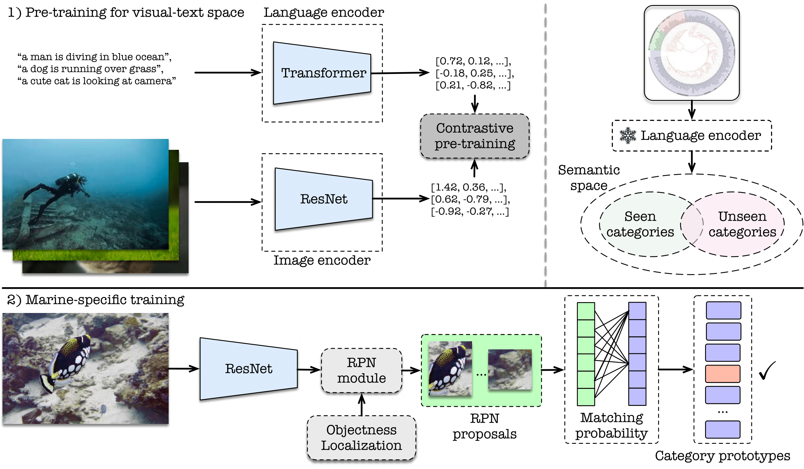

MarineDet: Towards 0pen-Marine Object Detection
Haixin Liang1
Ziqiang Zheng1
Zeyu Ma2
Sai-Kit Yeung1
1The Hong Kong University of Science and Technology
2University of Electronic Science and Technology of China
MarineDet dataset consisting of 821 marine-relative object categories to promote and measure open-marine object
detection performance
Abstract
Marine object detection has gained prominence
in marine research, driven by the pressing need to unravel
oceanic mysteries and enhance our understanding of invaluable
marine ecosystems. There is a profound requirement to efficiently
and accurately identify and localize diverse and unseen marine
entities within underwater imagery. The open-marine object
detection (OMOD for short) is required to detect diverse
and unseen marine objects, performing categorization and
localization simultaneously. To achieve OMOD, we present
MarineDet. We formulate a joint visual-text semantic space
through pre-training and then perform marine-specific training
to achieve in-air-to-marine knowledge transfer. Considering
there is no specific dataset designed for OMOD, we construct
a MarineDet dataset consisting of 821 marine-relative object
categories to promote and measure OMOD performance. The
experimental results demonstrate the superior performance of
MarineDet over existing generalist and specialist object detection
algorithms. To the best of our knowledge, we are the first to
present OMOD, which holds a more valuable and practical
setting for marine ecosystem monitoring and management. Our
research not only pushes the boundaries of marine understanding
but also offers a standard pipeline for OMOD.
Video
The framework overview

There are two main procedures: 1) pre-training for joint visual-text semantic space construction
and 2) marine-specific training.
Qualitative Results

The qualitative comparison between different algorithms. The left part of the dashed line represents the results of seen “Classes” while the right part
shows the results of unseen “Classes”.
Citation
@article{haixin2023marinedet,
title={MarineDet: Towards Open-Marine Object Detection},
author={Haixin, Liang and Ziqiang, Zheng and Zeyu, Ma and Yeung, Sai-Kit},
journal={arXiv preprint arXiv:2310.01931},
year={2023}
}